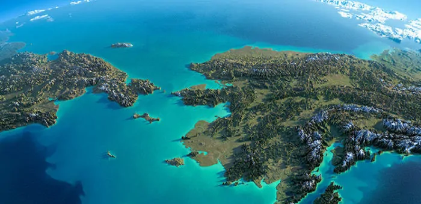

I primi abitanti dell'Alaska furono quei popoli che durante le ere glaciali raggiunsero l'America attraverso lo stretto di Bering, reso percorribile grazie all'aumento delle acque ghiacciate. Furono tra questi i progenitori delle varie tribù amerinde dello Stato.
Le terre dell'Alaska sono state inizialmente esplorate da Bering e Čirikov tra il 1728 e il 1741, poi da altri esploratori russi, spagnoli e inglesi (ricordiamo la spedizione di J. Cook nel 1778).
I mercanti russi sono stati i primi colonizzatori di queste zone, che tra il 1748 e il 1786 fondarono a Kodiak i primi stabilimenti mercantili di pellicce, ben presto divenuti anche centri per la colonizzazione ed evangelizzazione degli indigeni.

Dal 1799 l'Alaska acquistò poteri sovrani, concessi dallo zar Paolo I.
Nel 1867 la Russia, non intendendo assumersi l'onere del governo di un territorio tanto impegnativo lo cedette agli USA dietro un compenso di 7.200.000 dollari, senza esserne a conoscenza delle immense ricchezze minerarie di queste terre.
L'Alaska divenne così dapprima (dal 1867) territorio amministrato dal Congresso, poi, nel 1913, fu dotata di organi legislativi elettivi e infine, il 3 gennaio 1959, fu proclamata 49º Stato dell'Unione.

Per le informazioni storiche usate
per la realizazzione della pagina ci si è ispirati da
QUI